8 servos, an Arduino Uno, and a shield. Parts, wiring, calibration, and code are ready to help your robot stand and walk.
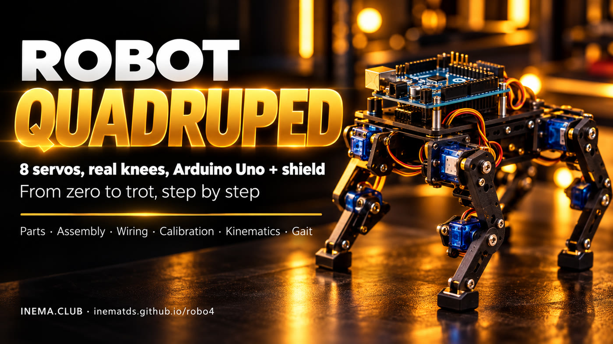
robo4 is a complete plan for building a small four-legged robot at home (about 20 cm tall) that can walk. Each leg has two small motors called servos: one at the hip and one at the knee. An Arduino Uno controls everything, with a plug-on board (shield) on top where the 8 servos connect. This guide includes the parts list, wiring diagrams, assembly and calibration steps, and code that already compiles. It is for anyone who wants to learn robotics hands-on. You need a computer, the listed parts, and an afternoon to build it.
Two joints per leg are the minimum needed for the foot to lift, move forward, and come down. The rest is calibration and timing.
Each leg has a hip and a knee (8 MG90S metal gear servos). The foot follows an arc: it lifts, moves forward, and plants.
Sensor Shield V5 has 3 pins per port. Plug the servos directly into D2 through D9. A separate power supply powers the servos.
Inverse kinematics, trot, slow walk, turns, and saved calibration. Control it with letters in the Serial Monitor.
Seven stages become the guide’s 10 steps: battery = step 1, electronics = 2, servos at 90° = 3, legs = 4 and 5, calibration = 6 to 8, slow walk = 9, trot = 10.
The code uses millimeters: “foot 15 mm forward and 85 mm below the hip.” Inverse kinematics (the law of cosines) converts that into two angles.
90° on the servo = thigh vertical and knee at a right angle. Hip: 90 + sign × angle + offset. Knee: 90 + sign × (angle − 90) + offset.
In the slow walk, one foot lifts at a time (three stay on the ground), and the body shifts to keep its weight over them. In the trot, two diagonal feet lift together. Everything updates 50 times per second.
Prices in Brazilian reais are estimates from October 2026. Basic total: R$ 450 to 850, excluding a 3D printer and optional parts.
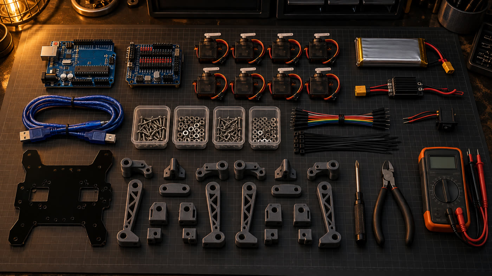
On a phone, swipe the table sideways to see all the columns.
| Item | Qty. | Estimate | Why this one |
|---|---|---|---|
| Arduino Uno R3 + USB cable | 1 | R$ 50–130 | The robot’s brain |
| Sensor Shield V5.0 for Uno | 1 | R$ 20–35 | S/V/G pins for plugging in the servos and a separate power terminal |
| MG90S micro servo | 8 (+1 spare) | R$ 18–30 each | Metal gears handle the load at the knee; plastic gears in the SG90 strip |
| 2S 7.4 V LiPo battery, 1000–2200 mAh, XT60 | 1 | R$ 70–140 | Powers the servos and Arduino |
| UBEC / 5–6 V step-down, 5 A or more | 1 | R$ 20–45 | 8 servos draw 4 to 6 A at peak |
| Blade fuse holder + 7.5 A fuse | 1 | R$ 8–15 | Right after the XT60: a short circuit won’t melt a wire or trace |
| On/off switch (≥ 5 A) | 1 | R$ 5–10 | Shuts everything off at once |
| LiPo voltage alarm (buzzer) | 1 | R$ 8–15 | Beeps before the battery voltage drops too low |
| 5.5 × 2.1 mm male P4 plug with pigtail | 1 | R$ 5–10 | Connects the battery to the Uno’s DC jack (the shield covers the VIN pin) |
| Red and black 18 AWG wire (~1 m) | 1 | R$ 8–15 | Power line: battery → switch → UBEC → terminal |
| 2S balance charger | 1 | R$ 60–150 | LiPo batteries must be charged with a balance charger |
| Chassis + 4 thighs + 4 shins | 1 set | R$ 10–40 | 3 mm acrylic or MDF cut to the dimensioned drawing, or 3D printed using the STL files (15 pieces, including 4 corner brackets) |
| Rubber feet, M2/M3 screws, spacers, zip ties, hook-and-loop tape | kit | R$ 30–60 | Mounting and grip |
| Optional: HC-05 Bluetooth, HC-SR04 ultrasonic sensor, MPU-6050 IMU | — | R$ 50–80 | Phone control, obstacle avoidance, balance |
Small Phillips screwdriver, wire cutters, multimeter, and soldering iron (only for the XT60 and switch).
Arduino IDE or arduino-cli (Arduino’s command-line tool). The commands in this guide use arduino-cli.
# install arduino-cli (Linux/macOS; on Windows, download it from arduino.github.io/arduino-cli) mkdir -p ~/.local/bin curl -fsSL https://raw.githubusercontent.com/arduino/arduino-cli/master/install.sh | BINDIR=~/.local/bin sh export PATH="$HOME/.local/bin:$PATH" # add this line to ~/.bashrc arduino-cli core update-index arduino-cli core install arduino:avr arduino-cli lib install Servo # Linux: permission to use the USB port (log out and back in afterward) sudo usermod -aG dialout $USER
Clones with a CH340 chip appear as /dev/ttyUSB0. On Windows, you may need the CH340 driver.
Download the repository with both sketches: assembly and firmware.
git clone https://github.com/inematds/robo4 cd robo4
The diagrams are SVGs in the repository (guia/assets/). They’re small on a phone: tap “Open full screen.” To print the parts drawing at full size, use the dimensions written on it (in mm), not the size on your screen.
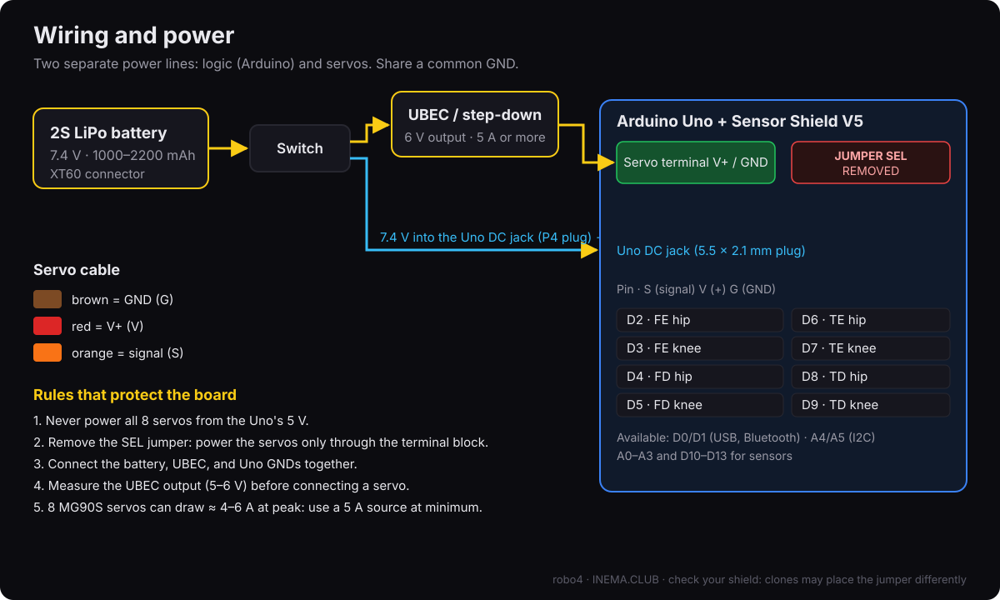
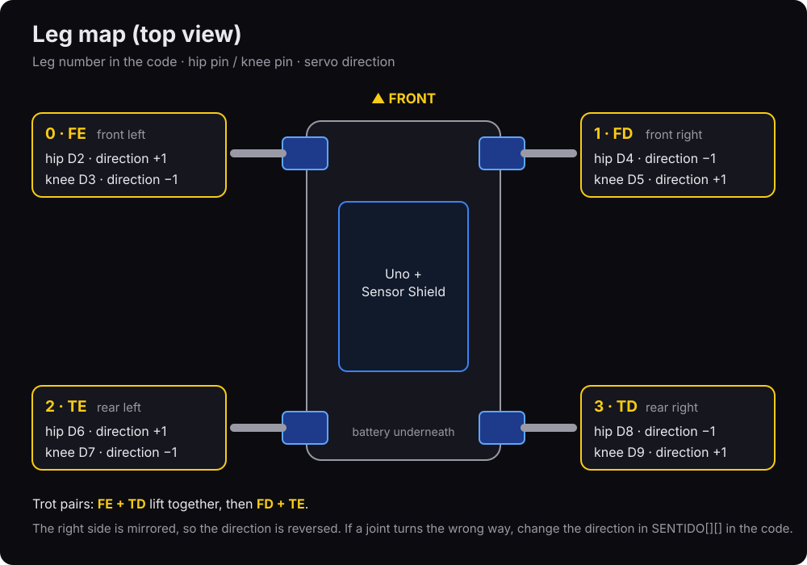
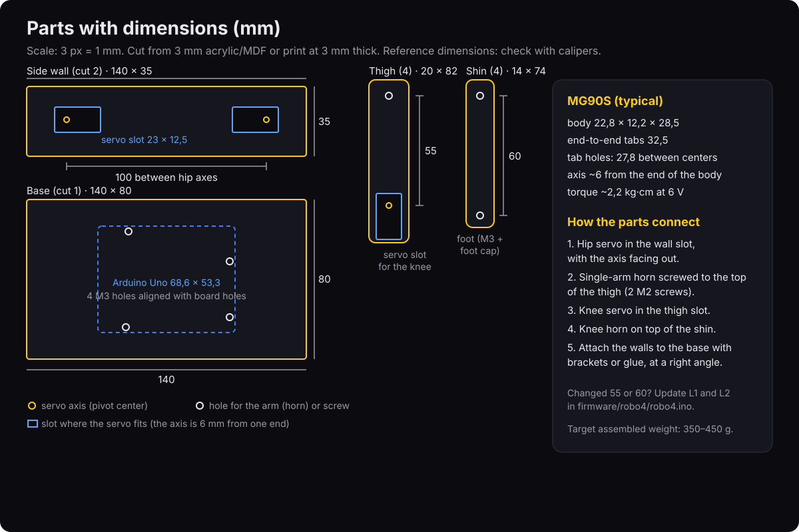
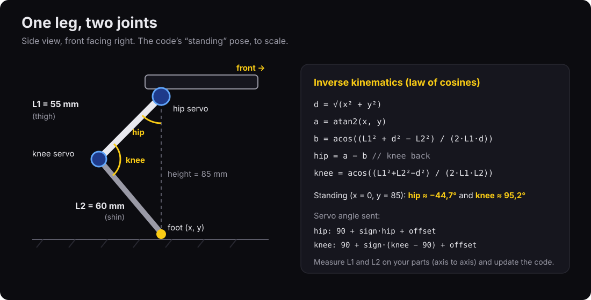
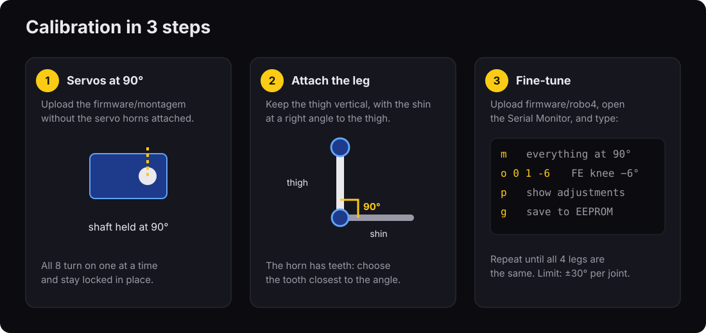
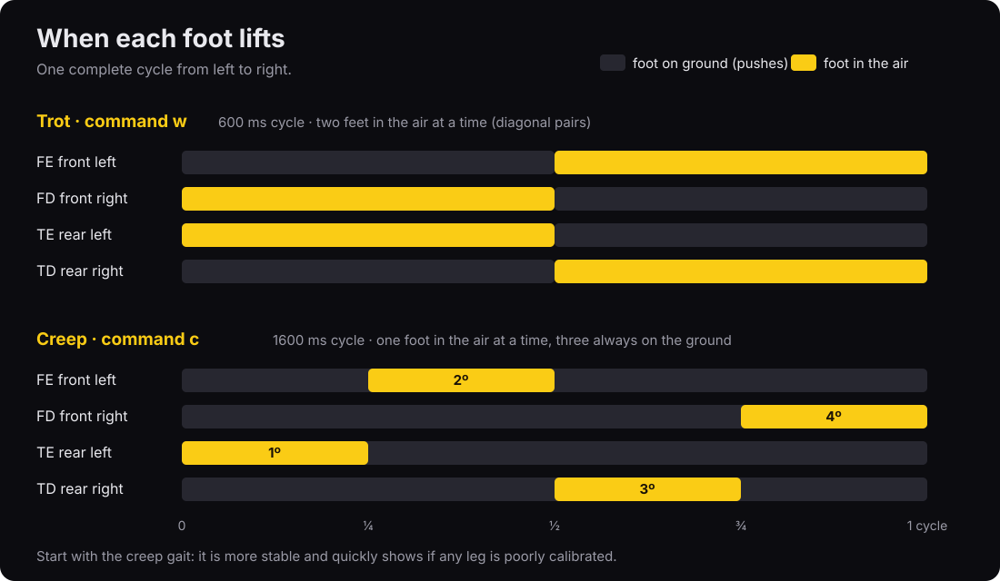
Replace /dev/ttyACM0 with your Uno’s port (on Windows, something like COM3). arduino-cli board list shows which one it is.
Charge the LiPo. Connect battery → switch → UBEC and measure the output with a multimeter. It should read between 5 and 6 V. Only connect a servo after that.
Plug in the Sensor Shield. Remove the SEL jumper. With everything off and no battery connected, set the multimeter to continuity mode (the setting that beeps). Touch one probe to a V pin on any servo port and the other to the Uno’s 5V pin (or the shield’s 5V pin): it should not beep. If it beeps, the jumper still connects the two (clones vary). Connect the UBEC to the servo power terminal. The Uno’s logic gets power from the LiPo through the DC jack (the round connector next to USB), with a 5.5 × 2.1 mm P4 plug: positive in the center, red wire to the center pin. Check the polarity with a multimeter before plugging it in.
The Uno’s regulator needs about 7 V at the jack. Set the LiPo alarm to 3.5 V per cell (7.0 V total): it will beep before the Uno starts restarting.
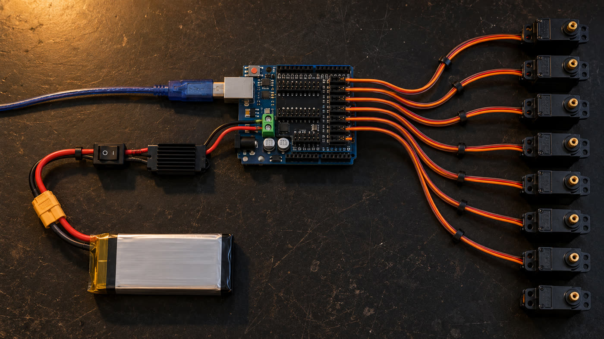
Plug the 8 servos into pins D2 through D9 (brown to G, red to V, orange to S), with the arms (horns, the small plastic pieces that fit on the shafts) unattached. With the servo power switch off, upload the assembly sketch over USB (the Uno may have an old program that moves pins D2 through D9). Then turn the switch on: the servos will move to 90° one at a time and hold position. Don’t turn the shaft by hand while the servos are powered.
arduino-cli compile --fqbn arduino:avr:uno firmware/montagem arduino-cli upload -p /dev/ttyACM0 --fqbn arduino:avr:uno firmware/montagem
Cut the parts using the dimensioned drawing. Screw the hip servos into the openings in the side walls, with the shafts facing out, and attach a horn to the top of each thigh: the thigh should be vertical and point toward the ground. The 2 horn screw holes vary by manufacturer. Hold the horn against the part, centered on the shaft hole, and mark the holes with it (3 mm center hole for the shaft screw, 1.5 mm holes for the horn screws). Fit the knee servo into the opening in the thigh with the shaft facing out (on the same side as the hip) and the body extending up along the thigh, facing inward toward the robot. Attach the shin to the knee horn, on the outside of the thigh, pointing toward the FRONT of the robot at a right angle (for all 4 legs). If it points backward, the knee bends the wrong way and the robot won’t stand. Changing the sign in the code won’t fix it. If the horn won’t fit at an exact right angle, use the closest tooth. You’ll correct the rest in step 7. Optional: to reduce wobble, add an M3 screw with a locknut (a nut with a nylon ring that keeps it from loosening) on the side opposite the shaft, passing through a second plate to act as a bearing.
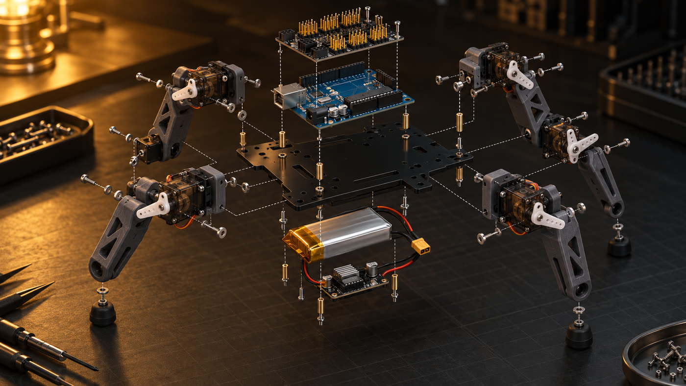
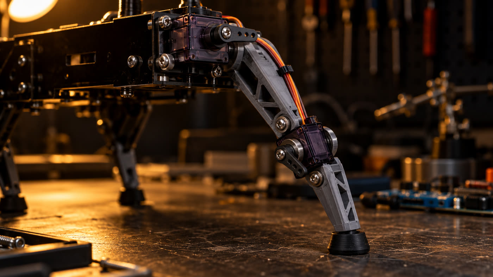
Mount the Uno + shield on top with 25 mm M3 spacers (so the board clears the hip servos). Attach the battery and UBEC underneath with hook-and-loop tape. Secure the cables with zip ties and leave slack at the knee. Otherwise, the wire will pull when the leg bends.
The firmware includes kinematics, gaits, and calibration. Suspend the robot (over a jar, with its legs in the air) the first time you turn it on. If no calibration is saved, it starts in assembly mode with everything at 90°. It will stand only when you tell it to.
arduino-cli compile --fqbn arduino:avr:uno firmware/robo4 arduino-cli upload -p /dev/ttyACM0 --fqbn arduino:avr:uno firmware/robo4 arduino-cli monitor -p /dev/ttyACM0 -c baudrate=9600 # robo4 pronto (sem calibracao: modo montagem, 90 graus).
Type m to set everything to 90°. Correct a crooked joint with the command o <leg> <joint> <degrees>. Type the whole command at once and press Enter (arduino-cli monitor doesn’t show what you type; in the Arduino IDE, set the Serial Monitor to “Newline”). The value replaces the previous offset for that joint; it doesn’t add to it. Legs 0 to 3 (FE, FD, TE, TD), joint 0 = hip, 1 = knee, degrees from −30 to 30. Save to EEPROM with g (the Uno’s memory that doesn’t erase when powered off).
m # all at 90° o 0 1 -6 # front-left knee: −6° (if it got worse, use 6) p # show the offsets g # save to EEPROM (retained when powered off)
Type x. The legs will slowly move into a standing pose (each servo moves at most 5° every 20 ms, which also reduces the load on the power supply). All four should bend the same way. If one bends the wrong way, change its sign in SENTIDO[][] in the code, compile, and upload again.
// firmware/robo4/robo4.ino const int8_t SENTIDO[4][2] = {{1, -1}, {-1, 1}, {1, -1}, {-1, 1}};
With the robot suspended, type c (slow walk, or creep) and check the order: rear left, front left, rear right, front right. The body shifts forward and backward on purpose to keep its weight over the three legs on the ground. Then place it on the floor.
BALANCO only moves the body forward and backward. If it tips forward or backward, increase BALANCO (12 → 18) or decrease PASSO. If it tips sideways, lower its height with - or spread the legs farther apart (base wider than 80 mm).
Once the slow walk is stable, switch to the trot.
w forward s backward a turn left d turn right c slow walk x stop z lie down + / - height
AI-generated images show the goal. They are not photos of a real prototype yet.
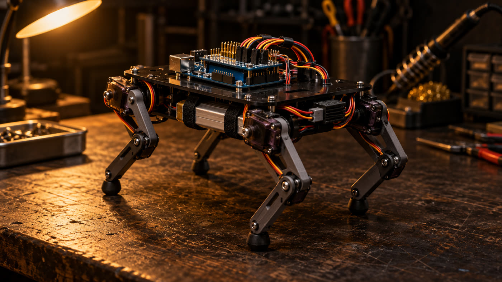
If a word slowed you down, you’ll find it here.
| Term | What it means |
|---|---|
| Servo | Small motor that turns to a requested angle (0 to 180°) and holds its position. |
| Horn | Plastic arm that fits on the servo shaft. The leg is screwed to it. |
| Shield | Board that plugs on top of the Arduino and adds connectors. |
| SEL jumper | Small plastic piece on the shield that connects the Arduino’s 5 V to the servos. Remove it here. |
| Terminal | Screw connector that holds a wire when tightened. |
| 2S LiPo | Lithium polymer battery with 2 cells in series: 7.4 V nominal. |
| XT60 | Common yellow connector on LiPo batteries. Handles high current. |
| UBEC | Regulator that lowers battery voltage to 5–6 V with enough current for the servos. |
| AWG | Wire thickness measurement: the lower the number, the thicker the wire (18 AWG is thicker than 20). |
| Bearing | Support on the side opposite the shaft that lets the part turn without wobble. |
| EEPROM | Arduino memory that retains its data when powered off; it stores calibration. |
| Sketch | Arduino program (the folder containing the .ino file). |
| Serial Monitor | Text window where you communicate with the Arduino over the USB cable. |
| Step-down | Regulator that lowers voltage (the UBEC is a step-down converter). |
| I2C | Two-wire connection (A4 and A5 on the Uno) used by sensors such as the IMU. |
| IMU | Sensor that measures tilt and rotation (for example, MPU-6050). |
| DC jack / P4 | Round power connector on the Uno and the plug that fits into it. |
| FQBN | Fully Qualified Board Name for arduino-cli: arduino:avr:uno. |
| Inverse kinematics | Calculation that converts “where the foot should be” into hip and knee angles. |
| Slow walk (creep) and trot | Ways to walk: one foot in the air at a time, or two diagonal feet together. |
Almost every servo quadruped problem comes down to power or calibration.
| Symptom | Likely cause | What to do |
|---|---|---|
| Arduino restarts when the servos move | Servos are drawing power from the Uno | Remove the SEL jumper, power servos only from the UBEC, share GND |
| Servo shakes while stopped | Weak power supply or thin wire | Use a 5 A or higher UBEC, 18 AWG power wire, and a charged battery |
| Servo gets hot | It is straining against its limit | Adjust with the o command; check that the leg isn’t hitting the chassis |
| Leg bends the wrong way | Reversed sign, or shin installed facing backward | Check that the shin points forward at 90° (step 4). If it does, change the sign in SENTIDO[][] |
| Walks crooked | Left and right sides are calibrated differently | Type m, then align the legs with the o command |
| Trips | Foot doesn’t lift high enough | Increase ELEVA (constants at the top of firmware/robo4/robo4.ino) |
| Falls sideways during the trot | Stride is too long or too fast | Decrease PASSO or increase CICLO_TROTE |
| Code won’t upload | Bluetooth is connected to D0/D1 | Disconnect the module during upload |
Everything fits on the Uno’s unused pins.